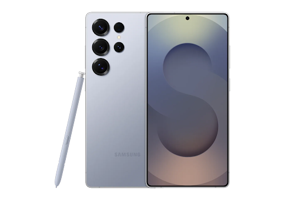
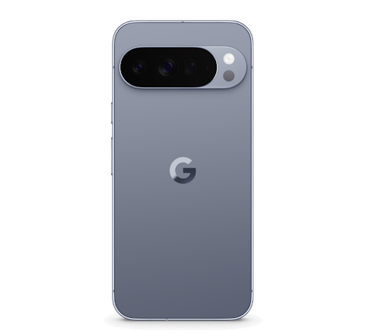
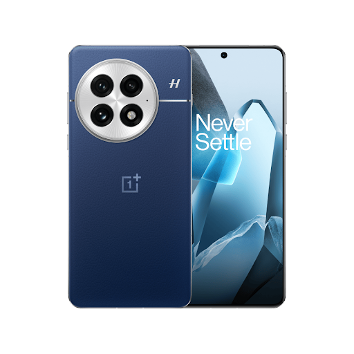
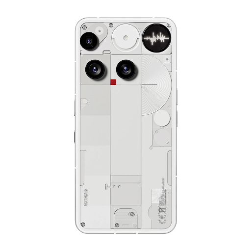
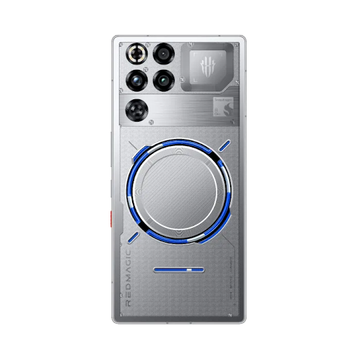

Galaxy
The Galaxy S25 Ultra is built for those who refuse to be limited by their hardware. For photographers, it’s like carrying a full gear bag in a single pocket; the massive sensor and specialized lenses let you find the shot in any environment, from sweeping landscapes to tight, detailed macros. Power users will find a flow that feels effortless, where the S-Pen acts as a natural extension of your hand for sketching ideas or navigating complex projects with surgical precision. Within the Galaxy Ecosystem, your devices breathe together—start a project on your phone, refine it on your tablet, and finish it on your laptop without a second thought. It’s a phone that embraces the "more is more" philosophy, offering a deep well of features that feel like a playground for your creativity, all backed by a sense of raw, unshakeable capability.

Pixel
Do you find yourself constantly stopping in your tracks because the light is hitting a building "just right," or because you spotted a texture that needs to be captured? If you’re the person in the friend group who is always designated as the "official photographer" because you actually care about framing and depth, then you’ve found your tribe. Ask yourself: Are you tired of photos that look over-processed and artificial? Do you wish you had a lens that could actually reach that distant detail without turning it into a blurry mess? If you answered "yes" to any of these, you aren't just a casual user—you’re a mobile artist. You deserve a device that treats a camera like a professional instrument rather than a social media afterthought.

OnePlus
The OnePlus 13 is the go-to for anyone who values a "frictionless" life. For the power user, it offers a level of incredible smoothness that makes every swipe and animation feel like it’s gliding on ice, powered by a top-tier processor that never seems to break a sweat. It boasts one of the biggest batteries on our list—a massive 6,000 mAh cell—meaning you can push your phone through a marathon of tasks, high-end gaming, and media without ever glancing at a battery percentage. This raw utility is wrapped in a truly premium build, featuring sophisticated materials like micro-fiber vegan leather or silk-textured glass that feel substantial and luxurious in the hand. It’s a device that balances high-performance "beast" energy with a refined, elegant aesthetic, making it the perfect choice for those who want the fastest phone on the market without it looking like a piece of gaming hardware.

Nothing
The Nothing Phone 3 is for those who find the sea of identical glass rectangles boring and want a device that doubles as a piece of industrial art. For the fashion-forward, its iconic transparent hardware and the pulsating Glyph Matrix offer a bold, retro-futuristic look that is hard to beat. It’s a "statement piece" that prioritizes a unique visual identity, letting you express your personality through your phone. For the budget-conscious consumer, this phone is a masterclass in value; it manages to deliver a high-end, premium feel and a buttery-smooth software experience at a price point that feels like a steal. If you’re looking for a phone that breaks the mold and embraces a "one-of-a-kind" aesthetic without breaking the bank, this is the unmistakable choice.

Redmagic
The Redmagic 11 Pro is the ultimate "hardware flex" for the dedicated gamer who takes mobile gaming seriously. It’s built around a singular philosophy: zero compromises. This is the only phone on our list that features a visible liquid-cooling loop and a physical 24,000 RPM turbofan, ensuring that the record-breaking chip never throttles, even during 8-hour marathon sessions. The experience is completely immersive thanks to a massive, notch-less display with an under-screen camera, giving you a seamless canvas for every frame. With the largest battery in its class (7,500 mAh) and specialized mappable shoulder triggers, it doesn't just play games—it dominates them. It’s a bold, unapologetic machine for the user who wants the "Final Boss" of performance in their pocket.
Motorola
The Motorola Razr Ultra is for the fashionist who views their phone as a signature piece of their daily "fit." It’s a masterclass in unique materials, moving away from cold, industrial glass to tactile, high-fashion finishes like Mocha Mousse vegan leather, refined wood, and even Alcantara-style textures that feel incredible in the hand and that you won’t find on any other device. The magic lies in its "glanceable" elegance; the massive, edge-to-edge cover screen allows you to check notifications, control your music, or snap high-res selfies without ever unfolding the phone, keeping you present in the moment. It’s a chic, compact accessory that proves a smartphone can be both a cutting-edge tool and a daring style statement.